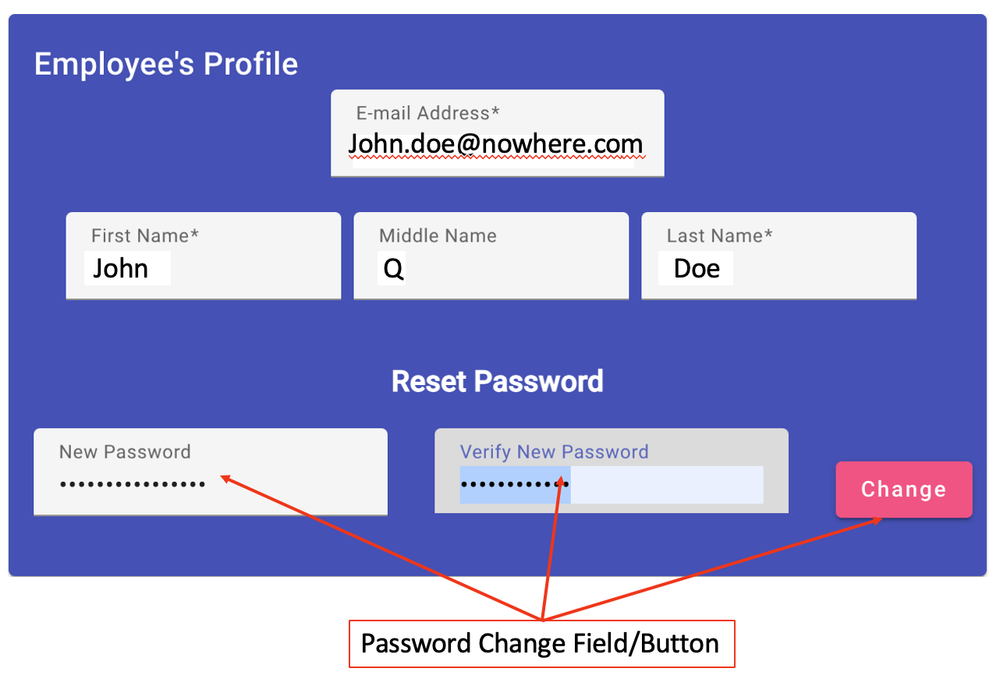

Employee Profile Editor

The employee profile editor allows the employee to edit their E-mail address,
name and password and space is provided for each.
-
Email Address/Name Editing - Each item is provided space to display
what the application has stored and for the employee to edit it. All
changes are saved when the editor either hits the <TAB> key or moves
the cursor to another place. To Edit:
- Place the cursor in the field you wish to change and click the
left mouse button.
-
Use your keyboard to make any necessary changes.
-
Either hit the <TAB> key or click the mouse in any outher field
or space outside the display. The changes are sent to the server at
this point.
-
Password Change - The new password must meet the requirements set
for the application as minimums (10 characters in length and 2 of each
type of character, lower-case, upper-case, numeric, and other characters).
The steps to change a password are:
-
Plave the cursor in the "New Password" field and click the left mouse
button.
-
Ensure the field is empty and type in the new password. If the new
password doesn't meet the minimum requirements a warning will be
provided below the field.
-
Hit the <TAB> key or click in the "Verify New Password" field.
-
Type in the new password again. If the two entries don't match, an
error message with display below this field. If the new password
meets the minimum requirements and the two entries match the "Change"
button will appear to the right of this field.
-
Click the "Change" button to send the change to the server.
Employee PTO/Holiday Display
Requesting Leave